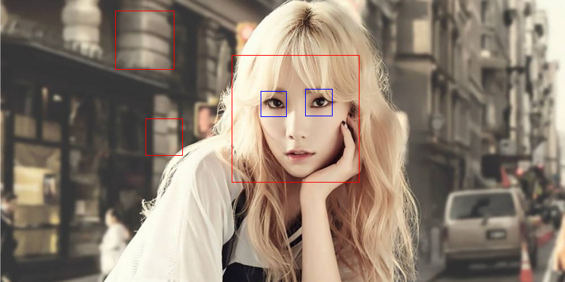
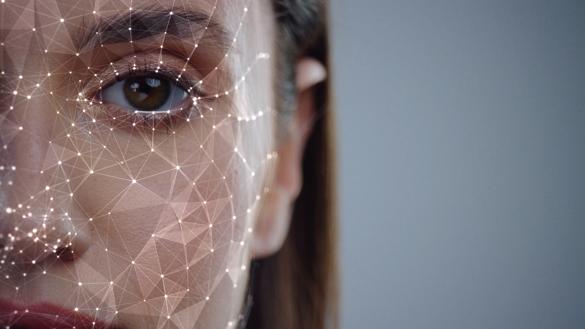
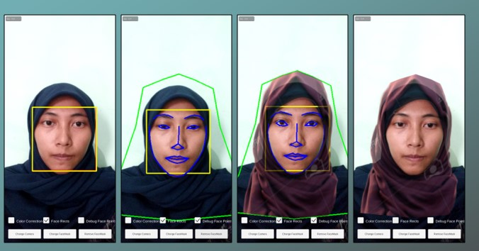

Augmented Reality
Augmented Reality (AR) adalah suatu lingkungan yang memasukkan objek virtual 2D atau 3D ke dalam lingkungan nyata. AR mengizinkan penggunanya untuk berinteraksi secara real-time dengan sistem. Penggunaan AR saat ini telah melebar ke berbagai aspek dalam kehidupan dan diproyeksikan akan mengalami perkembangan yang sangat signifikan (Arham, 2013).
Teknologi AR memungkinkan penambahan citra sintetis ke dalam lingkungan nyata. Berbeda dengan teknologi VR yang sepenuhnya mengajak pengguna ke dalam lingkungan sintetis, AR memungkinkan pengguna melihat obyek virtual 3D yang ditambahkan ke dalam lingkungan nyata (Wulansari, 2015). Pada VR pengguna tidak dapat melihat dunia nyata di sekitarnya dan hanya melihat dunia virtual, sedangkan AR menggabungkan antara dunia nyata dan dunia virtual dengan menambahkan objek virtual pada dunia nyata.
Menurut Azuma, AR memiliki tiga karakteristik yang menjadi dasar diantaranya adalah penggabungan dunia nyata dan vitual, dapat berinteraksi secara real time, dan bentuk model berupa objek 3D (R. T. Azuma, 1997). Namun terdapat perubahan pada poin ketiga yang semula bentuk model 3D menjadi penyelarasan antara dunia nyata dan objek virtual (R. T. Azuma, 2001).
Deteksi Wajah
Deteksi Wajah merupakan proses mendeteksi keberadaan wajah dalam sebuah citra dapat berupa gambar ataupun video menggunakan teknologi. Permasalahan yang umum terjadi yaitu: pada gambar maupun video, mendeteksi dan menentukan lokasi beberapa wajah (jika lebih dari satu). Solusi dari masalah tersebut meliputi: segmentasi, ekstraksi, and verifikasi wajah dan kemungkinan fitur wajah dengan latar belakang yang tidak tentu (Hjelmas & Low, 2001).
Viola-Jones

Metode Viola jones merupakan algoritma yang banyak digunakan untuk mendeteksi wajah. Metode menggunakan fitur Haar-like yang mengevaluasi secara cepat dengan mengolah kumpulan fitur menggunakan citra integral dan boosting algorithm untuk mengurangi kompleksitas waktu (Septian, 2014). Proses pendeteksian wajah dilakukan dengan mengklasifikasi sebuah gambar setelah sebelumnya melalui klasifikasi dari data latih. Untuk mempermudah pengolahan gambar, citra yang akan dideteksi terlebih dahulu dicari nilai keabuan atau diubah ke grayscale sebelum dimasukkan ke dalam sistem.
Landmark Wajah

Landmark pada wajah adalah bagian yang penting atau mudah dilihat dan dapat menjadi penanda. Landmark dapat berupa titik atau garis yang terbentuk dari titik satu ke titik lain. Wajah manusia memiliki fitur-fitur yang menjadi ciri khas tersendiri. Perkembangan mengenai teknologi deteksi wajah tidak cukup hanya sampai pada mendapatkan lokasi wajah pada citra namun bagian wajah yang lebih detail juga tidak kalah penting dalam menunjang kegunaan teknologi.
Hijab

Hijab yang dimaksud dalam penelitian ini adalah hijab yang secara umum tanpa model tertentu, namun dalam perkembangannya akan semakin banyak model hijab yang ditampilkan. Hijab yang dimaksudkan adalah hijab yang menutupi keseluruhan bagian kepala dan sampai ke bagian dada seperti yang dianjurkan dalam islam.